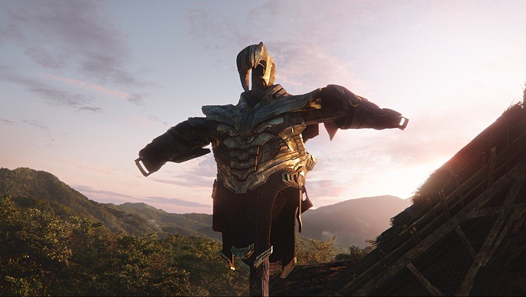

개봉 2019. 4. 24
감독 안소니 루소, 조 루소
등급 [국내]전체관람가
어벤져스 1세대의 마지막 전투
영화 <어벤져스: 엔드게임>이 전세계 영화 흥행 역사를 다시 한번 갈아치울 전망이다. 전 세계 최강의 화제작 영화 <어벤져스: 엔드게임>은 인피니티 워 이후, 지구의 마지막 희망이 된 살아남은 어벤져스 조합과 빌런 타노스의 최강 전투를 그린 영화. <아이언맨>(2008)을 시작으로 펼쳐진 약 10년에 걸친 마블 시네마틱 유니버스 대장정의 피날레 <어벤져스: 엔드게임>이 드디어 베일을 벗었다. <어벤져스: 엔드게임>의 이전에는 바로 역대급 결말로 화제를 모은 <어벤져스: 인피니티 워>가 존재 했다. MCU는 10년 간의 스토리를 집대성 해 역대 최고 오프닝 기록을 세운 <어벤져스: 인피니티 워>를 만들어 냈다. 프로듀서 루이스 데스포지토는 히어로의 절반이 사라지고 빌런 타노스가 완전한 승리를 거두는 결말을 확정 짓는 데 확신이 없었다고 전했다. 마블 내부에서도 의견이 갈렸으나 제작진 모두가 엔딩에서 강렬한 느낌을 받았다는 점에 힘입어 빌런 타노스가 이기고 어벤져스들이 지는, 지금까지와는 완전히 다른 방향으로 갈 수 있었다며 모두를 놀라게 한 결말의 탄생 과정을 설명했다.
안소니 루소 감독은 <어벤져스: 인피니티 워>의 엔딩에 대해 어려운 엔딩임을 충분히 알고 있었다고 전했다. 하지만 안소니 루소 감독은 대담한 결정을 통해 <어벤져스: 엔드게임>의 스토리에 큰 도약이 필요함을 통감했고 관객들에게는 힘들 수도 있는 결말로 <어벤져스: 인피니티 워>를 마무리 지었다. 다행히 관객들은 엔딩의 가치와 의미를 알아주었고 폭발적인 반응으로 화답하며 <어벤져스: 엔드게임>에 더욱 뜨거운 기대감을 모아주고 있다. 특히 <어벤져스: 인피니티 워>의 엔딩이 주는 여운은 ‘캡틴 마블’ 쿠키 영상에서 그 진가가 더해졌다. 프로듀서 루이스 데스포지토는 처음 테스트할 때는 쿠키 영상이 없어 자신조차 엔딩을 받아들이기 힘들었다고 한다. 하지만 쿠키 영상으로 인해 <캡틴 마블>로의 성공적인 연결을 이룰 수 있었던 것은 물론 대망의 파이널 <어벤져스: 엔드게임>으로 시작을 위한 끝을 보여줄 것이다.